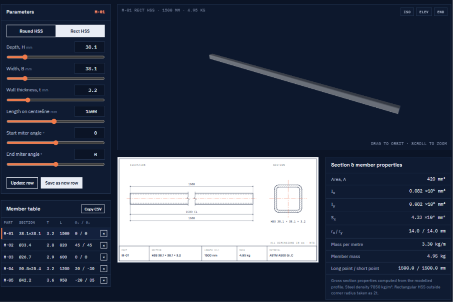

Featured · UBC Steel Bridge · 2025–present
Automated member modelling & drawing pipeline
- Problem
- Every bridge iteration meant re-modelling tube members by hand and re-editing drawing title blocks one sheet at a time.
- Approach
- Built parametric iPart tube families in Inventor (straight and angled, circular and rectangular), driven from an Excel/VBA interface through iLogic (VB.NET). A second VBA tool drives AutoCAD to create part and assembly drawings from the team template and fill every title block from one master sheet.
- Result
- Members and drawing sets are generated from data instead of drawn by hand, so design changes reach the fabrication package quickly.
Inventor iPartsiLogic / VB.NETExcel VBAAutoCAD